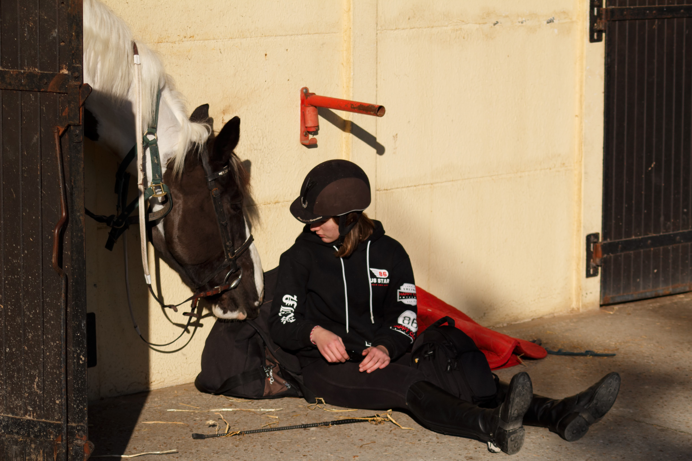
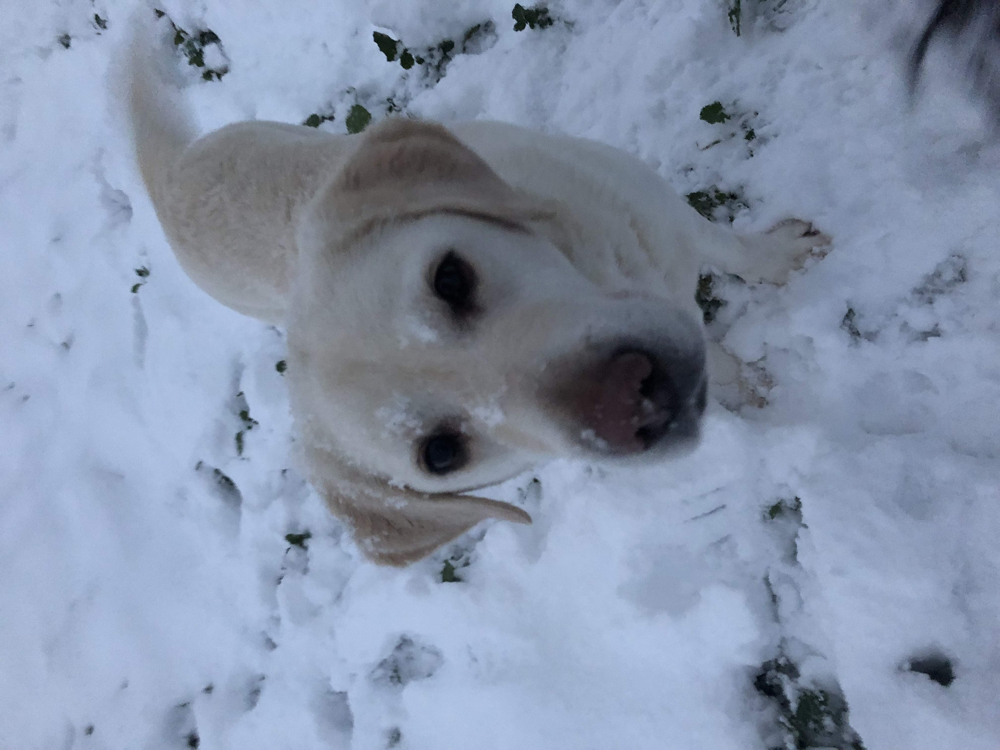

Bonjour, je m'appelle celia meudec, je suis née le 17 janvier 2002 a versailles. je suis actuellement en ecole de commerce a l'EMLV au pole universitaire leonard de vinci. je vis seul en appartement pour mes etude a courbevois.
mon instagraminstagram est le reseau social que j'utilise le plus car je peux poster plein d'instant de ma vie. üòÑ
j'ai aidé a la remise en etat de la base de données du logiciel de l'entreprise WAPP6 (aujourdhui ORACLE) par la comparaison de ses données et un fichier Excel. Cela m'a permis de collaborer avec les consultants et les autres services de l'entreprise.
en juillet 2019, j'ai travaillé chez kalidoc.
J'ai aidé les équipes sur différentes tâches comme répondre au standard téléphonique, recherche commerciale par internet, classement de dossiers, de la saisie de courriers, des photocopies, classement de documents. Cela m'a permis d'aider l'assistante de direction et comprendre le fonctionnement de l'entreprise tout en apportant mon aide.
de juin a aout 2020, j'ai de nouveau travaille chez kalidoc
j'ai Contrôler la qualité de la documentation, veiller au respect des normes documentaire définie par l’équipe projet, Enregistrer, actualiser, mettre à disposition différents intervenant internes et externes pour bon déroulement. j'ai Garanti le respect des délais de la production des documents et gérer les retards. tout cela m'a appris a travail équipe, maitrise des logiciels, analyse, organisation, gestion, posture professionnelle.
pour finir,chaque année je m'investi au travers d'associations autour de l'environnement et de causes liées aux maladies : Association "Mécenat Chirurgie Cardiaque" Mouvement "Fill the Bottle"& Mouvement "Nettoyons la Nature" pour nettoyer les forêts des déchets.
voici malek, le petit garcon de 2 ans que nous avons sauvé (il avait un probleme au coeur). au total 40 000€ on etait recolté afin de financer son voyage vers la france et son passage a l'hopital afin de se faire operer dans les meilleur condition possible.
j'aimerais etre dans le monde du luxe et particulierement dans le marketing de luxe, c'est pour cela que je suis rentré a l'EMLV. je compte avoir un double diplome avec l'IIM dans le maketing digital. apres l'obtention de ce diplome je compte faire 1 an de formation dans le luxe en alternance et rejoindre une agence.
j'aime beaucoup faire du sport. j'ai commencé avec 1 an de danse classique qui ne m'a pas trop plu, en suite 13 ans d'equitation, j'ai eu l'occasion de faire les championnats de france a lamotte-beuvron.

,puis 2 ans de foot ou nous avons remporter de multiple tournois et arrivée 2eme en coupe des yveline
et pour finir 2 ans de zumba et 3 ans de fitness.j'ai pu aussi faire du running, du tennis, du badminton et plein d'autre sport.
depuis mon plus jeune age j'adore les animaux. j'ai meme voulu etre veterinaire.
j'ai un labradore qui s'appelle etoile et c'est une petite mamie de 12 ans
j'ai recement adopté un chaton noir de 3 mois que j'ai appellé Blue.
au cour de ma vie j'ai eu la chance de beaucoup voyager, ce qui m'a permis de me cultivé et de decouvrir plein de paysage, de culture et de faire de nouvelle rencontre. je prefere les voyage ou je visite au voyage ou je bronze toute la journée a l'hotel.
ce son de magnifique ile, j'ai pu observer de nombreuse espece sous marine et faire les plus belle plongé de ma vie. ca m'a enormement plus mais je n'y retournerais pas pour mon simple plaisir.
j'ai essentiellement fait les magasins et profité de la plage. nous sommes aussi passé par abou dabi ou on a visité la mosqué (elle est magnifique) et le louvre
c'est une ile magnifique mais la population est tres pauvre et c'est lors de ce voyage ou j'ai realisé la chance que nous avions.
nous avons visité le pithon de la fournaise, ca m'a beaucoup marqué car nous avons marché sur de la lave refroidi et apres des année on pouvais toujours sentir la chaleur.
c'est un des voyage que je prefere car nous avons beaucoup visite dont des vestiges maya (coba et tulum), j'ai aussi eu la chance de nager avec des requin baleine.
ma grand mere est tunisienne donc on part souvent en tunisie, j'aime beaucoup y aller car elle nous prepare toujours plein de bon petit plat. puis on fait quelque sorti dans le desert ou a la plage.
le voyage qui m'a le plus plu car on a fait un road trip en floride entre ami entre miami orlando et key west.
j'aime beaucoup les corses et je trouve qu'il y a de magnifique paysage et de superbe rendonnée a faire. j'ai pu faire quelque sentier puis aller me baigner dans des sources d'eau douce.
j'ai visite plein de petit village pres de marseille mais le voyage qui m'a le plus marque est le road trip en velo. on est parti 1 mois en velo avec mes grand parents, mes cousines et ma tatie/tonton. on est parti de saint nazaire jusqu'a la dune du pila. on avait nos affaire sur nos velo et tout les jour on faisait entre 30 et 70 km. on dormais dans un camping different chaque soir.